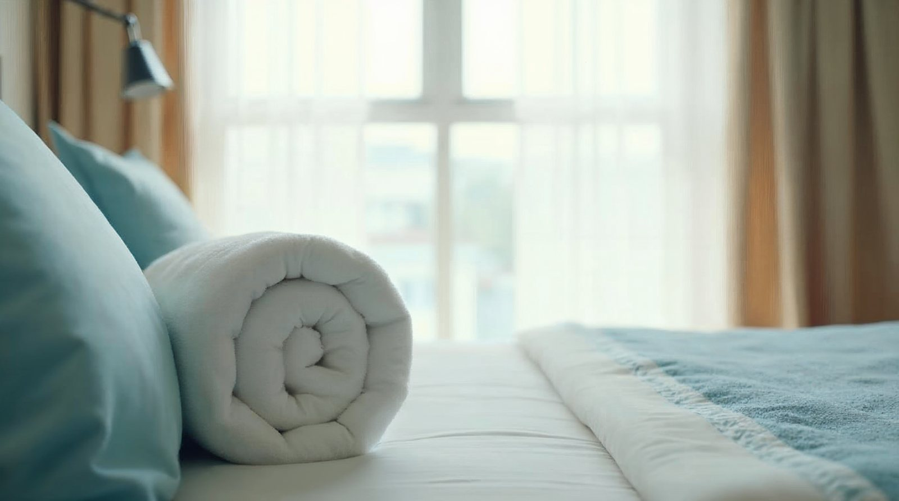
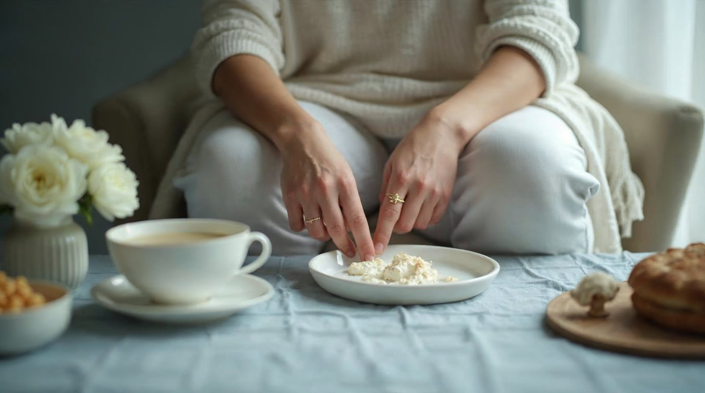
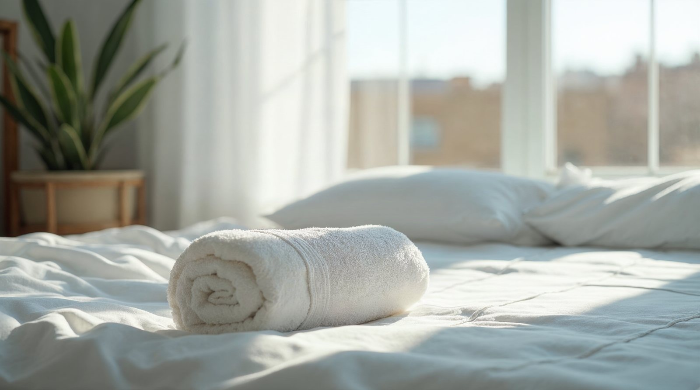
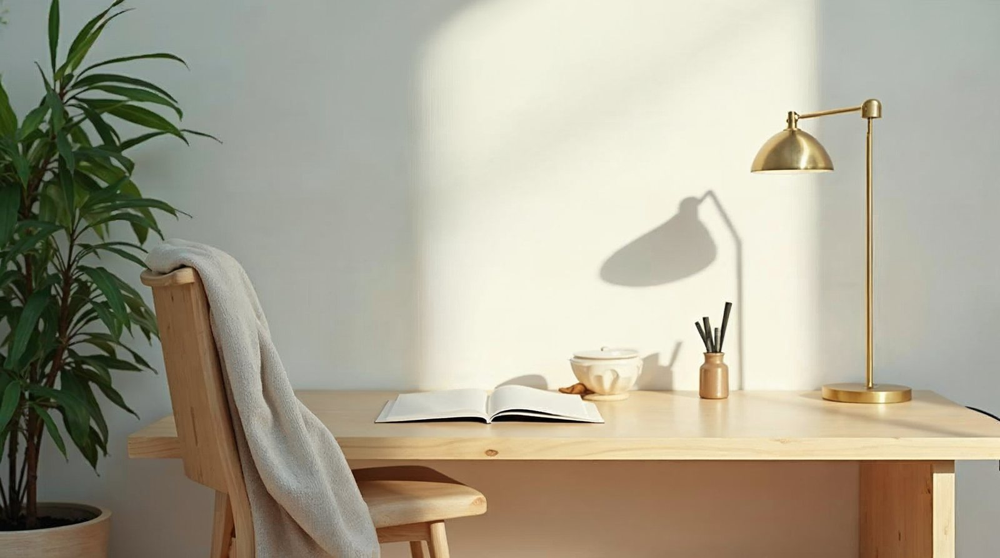

이종호 한의사 감수좋은꿈참사랑한의원 대표원장 (한의사 면허번호 19769)발행 2026-11-24 · 수정 2026-11-26
이 글의 차례
오후 4시쯤 되면 뒷목이 뻣뻣해집니다. 모니터 쪽으로 고개가 점점 빠져 있다는 걸 알아차리고 허리를 펴 보지만, 10분도 지나지 않아 다시 같은 자세입니다. 퇴근길 지하철에서는 고개를 숙인 채 휴대폰을 보고, 집에 와서도 소파에 기대 또 화면을 봅니다.
자려고 누우면 베개가 높은지 낮은지 잘 모르겠고, 아침에 일어나도 목이 개운하지 않습니다. 그러다 어느 날 누가 찍어 준 옆모습 사진을 보고 깜짝 놀랍니다. 내 목이 이렇게 앞으로 나와 있었나 싶어서요.
진료실에서 이런 말씀을 자주 듣습니다. "제가 거북목이라서요." "병원에서 일자목이라던데, 이거 펴질 수 있나요?" 사진 한 장, 영상 한 장에 마음이 무거워져서 오시는 분이 많습니다. 매일 같은 자리가 뻐근한데 일을 그만둘 수도 없고 화면을 안 볼 수도 없으니, 얼마나 답답하실까요. 머리까지 무거운 날이 이어지면 하루를 버티는 것 자체가 일이 됩니다.
먼저 이 말씀부터 드리고 싶습니다. 사진 속 목이 앞으로 나와 보인다고 모두 치료가 필요한 것은 아닙니다. 고개를 돌릴 때 걸리거나, 오후마다 뒷목이 뻐근하고 머리가 무겁다면 그때 목과 등의 움직임을 함께 살펴볼 만합니다. 다만 팔이나 손으로 저림이 내려가거나 힘이 빠진다면 자세 문제로만 보지 않고, 목 신경 쪽 확인을 먼저 합니다.
왜 목이 앞으로 나올까요
사람의 머리는 생각보다 무겁습니다. 머리가 어깨 바로 위에 얹혀 있을 때는 목이 비교적 편하게 받치지만, 앞으로 나올수록 뒷목과 어깨 근육이 그 무게를 붙잡느라 더 애를 씁니다. 화면을 내려다보는 시간이 길면 이 근육들이 하루 종일 긴장한 채로 지내게 되지요.
등이 굽고 어깨가 앞으로 말리면 목이 앞으로 나온 자세가 더 쉽게 굳습니다. 높은 베개를 베거나 엎드려 휴대폰을 보는 습관은 밤사이 목에 부담을 더하기도 합니다. 움직임이 적은 하루가 이어지면 목과 등 사이가 뻣뻣해지는 느낌이 들 수 있고요. 목 뒤가 오래 굳어 있으면 머리가 무겁고 조이는 듯한 두통으로 이어지는 분도 있습니다.
그러니 목이 앞으로 나온 것은 의지가 약해서가 아닙니다. 하루의 대부분을 화면 앞에서 보내야 하는 생활이 몸에 남긴 흔적에 가깝습니다. 저는 그 생활을 탓하기보다, 그 안에서 바꿀 수 있는 작은 것을 함께 찾는 쪽을 택합니다.
거북목과 일자목은 이렇게 다릅니다
두 말을 같은 뜻으로 쓰는 분이 많은데, 조금 다릅니다. 거북목은 옆에서 보았을 때 귀가 어깨 끝보다 앞으로 나와 머리가 앞으로 쏠린 자세를 흔히 부르는 말입니다. 자세이기 때문에 하루 중에도, 피곤한 정도에 따라서도 달라집니다. 아침에는 괜찮다가 오후에 더 나와 보이는 것도 그래서입니다.
일자목은 목뼈가 원래 가진 완만한 곡선이 줄어 X선에서 곧게 보이는 모양을 가리킬 때 많이 씁니다. 두 가지가 함께 있는 경우도 많습니다. 하지만 사진이나 영상의 모양이 곧 통증의 크기를 뜻하지는 않습니다.
영상에서 곧게 보여도 크게 불편하지 않은 분이 있고, 반대인 분도 있습니다. 실제로 어떤 동작이 불편한지가 더 중요한 기준입니다. 어깨가 둥글게 앞으로 말린 자세가 겹친 분도 흔한데, 이럴 때는 목만이 아니라 가슴 앞쪽과 등 위쪽의 균형도 같이 봐야 합니다.
집에서도 가볍게 살펴볼 수는 있습니다. 벽에 발뒤꿈치와 엉덩이, 등을 대고 섰을 때 뒤통수가 편하게 닿는지 보세요. 가족에게 옆모습 사진을 한 장 부탁해, 귀가 어깨보다 얼마나 앞에 있는지 보는 것도 방법입니다. 다만 이것은 진단이 아니라 내 자세를 알아차리는 정도의 확인입니다.

이런 분들을 자주 뵙습니다
하루 종일 노트북으로 일하는 직장인들이 많이 오십니다. 오후 3~4시만 되면 뒷목이 뻣뻣하고 머리가 무겁다고 하시지요. 노트북은 화면과 자판이 붙어 있어서 화면을 눈높이에 맞추기가 어렵습니다.
이런 분께는 노트북을 받침대에 올리고 따로 키보드를 쓰면 화면을 내려다보는 각도를 줄일 수 있다고 말씀드립니다. 뻐근함이 시작되는 시간과 그날 화면을 본 시간을 함께 적어 오시면 상담에서 흐름을 보기가 훨씬 쉽습니다.
수험생도 자주 뵙습니다. 책을 책상에 눕혀 놓고 고개를 숙인 채 몇 시간씩 공부하다 보면 목과 등이 함께 굽습니다. 독서대로 책을 세우고, 50분쯤 공부한 뒤에는 일어나 목과 어깨를 풀어 주자고 권합니다. 시험이 가까울수록 쉬는 시간이 아깝게 느껴지겠지만, 몇 분의 쉼이 오후의 집중을 지켜 주기도 합니다.
모니터 두 대를 쓰면서 고개를 한쪽으로 돌린 채 오래 일하는 분은 한쪽 목만 유독 결린다고 하십니다. 가장 오래 보는 화면을 정면에 두고 보조 화면을 옆에 두는 것만으로도, 고개를 돌린 채 버티는 시간이 꽤 줄어듭니다.
뒷목이 굳으면서 머리가 조이듯 아픈 날이 잦다는 분들도 많습니다. 두통약을 드시는 분이라면 약은 그대로 드시면서 먹는 횟수와 그날 화면을 본 시간을 함께 적어 보시라고 권합니다. 다만 처음 겪는 아주 심한 두통이 갑자기 왔다면 기록하며 지켜보지 말고 가까운 응급실로 가세요.
출퇴근길 지하철에서 서서 휴대폰을 오래 보는 분들도 많습니다. 휴대폰을 눈높이 가까이 들어 보고, 보는 시간을 정해 두는 것부터 시작해 볼 수 있습니다. 엎드려 휴대폰을 보다 잠드는 습관이 있는 분이라면, 그 습관부터 줄여 보자고 말씀드립니다.

하루 중에 해 볼 것
모니터는 윗부분이 눈높이에 오도록 맞추고, 노트북은 받침대를 쓰세요. 의자에 앉을 때 엉덩이를 등받이 끝까지 붙여 앉으면 등이 덜 굽고, 그만큼 고개도 덜 앞으로 나옵니다. 휴대폰은 눈높이로 들어 올려 보고, 고개를 숙이는 시간을 줄입니다.
한 시간에 한 번은 턱을 살짝 당기고 어깨를 뒤로 크게 돌려 주세요. 누웠을 때는 목이 꺾이지 않는 높이로 베개를 맞추고, 엎드려 휴대폰을 보는 습관은 줄여 봅니다.
어깨를 억지로 뒤로 젖힌 채 버티려고 하지는 마세요. 힘을 주어 버티면 금방 지칩니다. 그보다는 짧게, 자주 가슴을 펴 주는 편이 오래 이어 가기 쉽습니다. 하루 한 번 벽에 등을 대고 서서 뒤통수와 어깨가 함께 닿는지 확인해 보는 것도 좋습니다.
뻐근한 날 저녁에는 따뜻한 수건으로 목 뒤를 10분쯤 감싸 주셔도 됩니다. 다만 다친 직후처럼 붓고 열감이 있을 때는 피해 주세요.
베개를 꼭 새로 사실 필요는 없습니다. 바로 누웠을 때 턱이 들리거나 가슴 쪽으로 처지지 않는지, 옆으로 누웠을 때 목이 한쪽으로 꺾이지 않는지부터 보세요. 수건을 접어 높이를 조금씩 맞춰 보는 것만으로도 내게 맞는 높이를 찾는 데 도움이 됩니다.
스스로 한번 점검해 보셔도 좋겠습니다.
- 앞에서 말씀드린 옆모습 사진이나 벽 서기에서 머리가 앞으로 나와 보이는지
- 오후가 되면 뒷목과 어깨가 뻐근하고 머리가 무거운지
- 고개를 한쪽으로 돌릴 때만 걸리는지
- 하루 대부분을 화면 앞에서 보내는지
- 자고 일어나도 목이 개운하지 않은지
- 팔이나 손가락으로 저림이 내려가는지
마지막처럼 팔 저림이 있거나 점점 심해진다면 자세를 고쳐 보기보다 먼저 진료를 받아 확인하세요.

추나는 이렇게 진행합니다
추나라고 하면 뼈를 뚝 맞추는 장면부터 떠올리시는 분이 많습니다. 추나는 한의사가 손으로 관절의 움직임과 근육의 긴장을 살펴 기법을 고르는 수기 치료입니다. 그래서 시작하기 전에 어느 방향에서 움직임이 막히는지, 어디를 누르면 아픈지를 먼저 확인합니다.
목이 앞으로 나온 분이라고 모두 같은 방법을 쓰지는 않습니다. 굳은 근육을 부드럽게 풀거나 관절을 천천히 움직이는 방법도 많이 쓰고, 같은 분이라도 그날 몸 상태에 따라 기법과 세기를 달리합니다. 소리가 나는지는 목표가 아닙니다. 무섭거나 불편하면 언제든 말씀해 주세요. 그 자리에서 멈추고 방법을 바꿉니다.
추나를 마치면 처음에 불편했던 방향으로 고개를 다시 돌려 보며 함께 확인하고, 집에서 지킬 자세를 알려 드립니다. 받은 뒤 하루 이틀 몸살처럼 뻐근하다는 분도 있는데, 저림이나 힘 빠짐이 새로 생기거나 통증이 점점 심해진다면 미루지 말고 바로 진료를 받으시고, 아래에 적은 응급 신호가 함께 있다면 가까운 응급실로 가세요.
골절이 있거나 골다공증이 심한 경우, 신경 증상이 있는 경우에는 추나를 하지 않거나 더 신중하게 판단합니다. 임신 중이거나 임신 가능성이 있다면 미리 알려 주세요.

얼마나 지켜보고, 언제 진료를 받을까요
하루 이틀 무리해서 생긴 뻐근함이라면 화면 높이와 쉬는 간격을 바꿔 보며 1~2주 지켜볼 수 있습니다. 자세를 바꿔 보고 2~3주가 지나도 오후마다 뒷목이 굳고 두통이 되풀이된다면 진료를 받아 보세요. 고개가 한쪽으로 잘 돌아가지 않아 운전이나 일에 지장이 있다면 기다리지 마시고요.
다음과 같은 경우에는 영상 검사가 가능한 의료기관에서 먼저 확인을 받으세요.
- 팔 저림이나 힘 빠짐이 점점 심해지는 경우
- 걸음이 불안정해지거나 손이 둔해진 경우
- 사고나 낙상 뒤 목이 아픈 경우
갑자기 생긴 아주 심한 두통, 열과 함께 목이 뻣뻣하고 머리가 심하게 아픈 경우, 말이 어눌해지거나 한쪽 팔다리에 힘이 빠지는 증상이 있다면 한의원 진료를 기다리지 말고 가까운 응급실에서 바로 확인을 받으세요. 복용 중인 약은 처방한 의사와 상의 없이 줄이거나 끊지 않습니다.
좋은꿈참사랑한의원에 처음 오시면
처음 오시면 저는 고개를 어느 방향으로 돌릴 때 불편한지부터 여쭙니다. 뒷목과 어깨가 자주 뭉치는지, 두통이 함께 있는지, 하루에 화면을 보는 시간은 어느 정도인지도 듣습니다. 팔이 저리거나 힘이 빠지는 느낌은 없는지, 엎드려 휴대폰을 보거나 높은 베개를 쓰시는지, 자고 일어났을 때 목이 더 뻣뻣한지도 함께 여쭙습니다.
그다음 모든 분께 맥을 짚습니다. 목이 아파 오셨는데 손목부터 보니 의아하실 수 있지요. 같은 뻐근함이라도 몸이 지쳐 있는지, 잠이 부족한지에 따라 치료의 세기와 순서가 달라질 수 있어서입니다.
이어서 서 있을 때와 앉았을 때의 자세, 목과 어깨를 돌리는 범위, 팔 힘과 저림 여부를 봅니다. 목과 어깨 근육 상태를 볼 필요가 있다고 판단되면 초음파를 함께 쓰기도 합니다. 팔로 저림이 내려온다면 양팔의 감각과 힘을 좌우로 비교해 보고, 영상 검사가 먼저 필요해 보이면 그 이유를 말씀드리고 병원을 안내합니다.
필요하다고 판단될 때 추나를 진행하며 강한 힘보다 상태에 맞는 강도로 하고, 불편하면 바로 멈춥니다. 필요하면 침을 함께 정하고, 귀가 전에는 책상과 베개에서 바꿔 볼 점을 알려 드립니다.
추나요법의 건강보험 적용 여부와 본인부담금은 진찰 후 안내해 드리며, 미리 궁금하시면 방문 전 전화로 확인해 주세요. 다음 진료에서는 지난번 불편했던 방향으로 고개를 다시 돌려 보며 달라진 점을 이어서 여쭙습니다.
오실 때는 하루 화면 사용 시간(업무, 휴대폰), 뻐근함이 심해지는 시간대와 두통이 오는 날, 지금 쓰는 베개 높이와 자는 자세, 팔 저림이나 두통이 있었다면 그 날짜와 시간대를 메모해 오세요. 일하는 책상과 의자, 모니터 높이를 찍은 사진이 있으면 더 좋습니다.
마치며
목은 깨어 있는 내내 쉬는 시간도 없이 머리를 받치고 있습니다. 화면 앞에서 일하고 공부해야 하는 생활이 바뀌지 않는 한, 뻐근함이 하루아침에 사라지기는 어렵습니다. 그래도 그동안 그 무게를 견디며 버텨 오신 목과 어깨를 생각하면, 이제는 조금 돌봐 줄 때가 되었습니다.
모니터 높이 하나, 베개 높이 하나처럼 작은 것부터 바꿔 보셔도 충분합니다. 자세는 금방 바뀌지 않지만, 내가 어떤 자세로 하루를 보내는지 알아차리는 것부터가 시작입니다.
오늘은 뒷목이 뻐근해지는 시각을 한 번만 기억해 두세요. 다음에 오시면 이번 주에 뒷목이 가장 뻐근했던 시간과 그때 무엇을 하고 계셨는지부터 여쭙겠습니다.
함께 읽으면 좋은 글
- 거북목과 라운드숄더는 집에서 어떤 스트레칭을 해 볼 수 있나요?
- 목에서 팔로 저림이 내려올 때(목디스크 의심)는 어떤 점을 먼저 확인하나요?
- 자고 일어나면 목이 아픈 것은 베개 때문일까요?

왜 목이 앞으로 나올까요
- 사람의 머리는 생각보다 무겁습니다.
- 머리가 어깨 바로 위에 얹혀 있을 때는 목이 비교적 편하게 받치지만, 앞으로 나올수…
거북목과 일자목은 이렇게 다릅니다
- 두 말을 같은 뜻으로 쓰는 분이 많은데, 조금 다릅니다.
- 거북목은 옆에서 보았을 때 귀가 어깨 끝보다 앞으로 나와 머리가 앞으로 쏠린 자세를…
이런 분들을 자주 뵙습니다
- 하루 종일 노트북으로 일하는 직장인들이 많이 오십니다.
- 오후 3~4시만 되면 뒷목이 뻣뻣하고 머리가 무겁다고 하시지요.
하루 중에 해 볼 것
- 앞에서 말씀드린 옆모습 사진이나 벽 서기에서 머리가 앞으로 나와 보이는지
- 오후가 되면 뒷목과 어깨가 뻐근하고 머리가 무거운지
자주 묻는 질문
거북목은 추나로 펴지나요?
변화의 정도와 기간은 사람마다 다릅니다. 일상에서 불편했던 동작이 어떻게 달라지는지 기록하며 조정합니다.
목을 꺾는 방식인가요?
방법은 상태에 따라 다르며 목적은 소리를 내는 것이 아닙니다. 불편하거나 무서우면 언제든 말씀해 주세요.
모든 환자가 추나를 받나요?
아니요. 진찰 후 필요하다고 판단될 때만 진행합니다.
목 베개나 교정 베개를 사야 하나요?
꼭 새로 살 필요는 없습니다. 지금 베개 높이와 자는 자세를 먼저 듣고 바꿀 점을 이야기합니다.
사진에서 일자목이라는 말을 들었는데 꼭 치료해야 하나요?
영상의 모양만으로 정하지 않습니다. 실제로 불편한 동작과 두통, 팔 저림 여부를 함께 보고, 불편이 크지 않다면 자세와 생활 습관부터 살펴보는 경우가 많습니다.
좋은꿈참사랑한의원은 재진 때 지난번 이야기부터 이어서 여쭙니다. 진료시간과 예약은 오시는 길에서 확인하세요.
어디서 상담받을 수 있나요?
좋은꿈참사랑한의원은 서울 동작구 만양로2길 2 신성빌딩 3층·5층(서울 동작구 상도동, 7호선 상도역 3번 출구 근처)에 있습니다. 한의사 3명(이종호 대표원장, 조영기 수석진료원장, 정원영 진료원장)이 진료합니다. 진료시간은 평일 09:30~20:00(점심 13:00~14:00), 토·일·공휴일 09:30~15:00이며, 방문 전 전화로 확인을 권합니다. 예약은 네이버 예약, 카카오톡 상담, 전화 02-815-7510로 받습니다.
이 글은 일반적인 건강 정보이며 개인의 진단이나 치료를 대신하지 않습니다. 증상이 있거나 복용 중인 약이 있다면 진료를 통해 확인하세요. 치료 효과는 개인마다 다를 수 있습니다.
작성 기준: 일반적으로 알려져 있는 건강 정보를 참고해 정리했습니다(대표원장 감수). 증상 기록은 1~2주 동안 하루 1회, 비슷한 시간에 적어 오시면 지난 상태와 비교하기 쉽습니다.